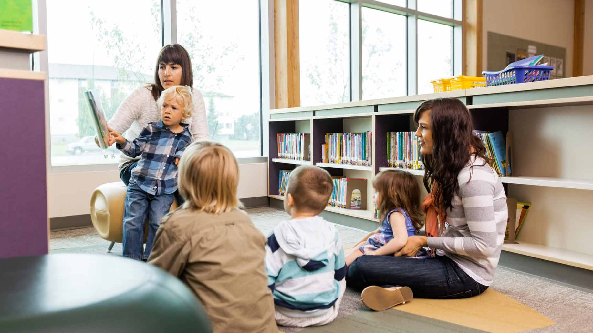

Services A Library Provides
It's not JUST a quiet place to read!
eBooks and Audio Books
The rise of ebooks aren’t a reason to stay away from your local public library. Instead, they’re a reason to flock to it. While Apple iBooks and Amazon Kindle books routinely sell for $9.99 each, you can check out ebooks for free via your public library, and keep them for 21 days, just like regular books. You can also renew them unless someone else has placed a hold on your book. If you normally purchase and read one book per week, that’s a savings of more than $500 over the course of a year.
Both ebooks and audiobooks can be accessed through a free app called OverDrive, which is available for use on the following: iPhone, iPad, Android, Chromebook, Windows Phone, Windows 8 & 10, Kindle Fire HD, NOOK HD/HD+. OverDrive can be downloaded from the following: The App Store for iPhones and iPads, Mac products (including Macbooks), Google Play, Amazon Appstore for Android devices, Chrome Web Store, NOOK Devices

Free Computer Use, Internet Access, WiFi & Research Support
Technically, these are four reasons to use your local library. If your mobile data plan is almost used up for the month, consider swinging by your public library during opening hours to take advantage of free WiFi instead of paying for overages. Though not all library systems offer free WiFi, it’s increasingly common. And nearly all libraries have Internet-connected computers that are free for member use, so it’s a great place to surf the web, hunt for a job, work on school projects, or get work done without all the distractions of home – while saving money on your electric bill.
If you need help researching a topic while you’re there, ask a librarian. Librarians are trained researchers who can help you use the library catalog to find the reference material you need. Many librarians are also web-savvy enough to assist with Internet research if they have time. Libraries often have subscriptions to prep courses for tests such as the SAT and GRE, so you might be able to skip shelling out hundreds of dollars for a tutor and prep book.

Self-Help, DIY, Travel, and Reference Books
Your local public library is a one-stop-shop for just about every kind of information and entertainment you need. If you’re working on a home improvement project, check out a home improvement book. If you’re having a baby, check out books on baby names, pregnancy, birth, and parenting. If you’re planning a trip to London, check out travel guides. Of course, you could buy books on each of these subjects, but instead of spending the money and clogging up your bookshelf for information you only need for a limited time, you could simply borrow the book. I recently donated nearly 90% of my book collection because I rationalized that if I needed to read almost any of my books, I’d simply find them at the library.
Inter-Loaning Library (ILL)
If your local library doesn’t have the book you need, you can request a transfer from elsewhere in the system. Major metropolitan areas don’t simply have one library, but rather operate a system of libraries. Yours might be based on the county or city you live in. A single library system can have dozens of libraries, and that exponentially expands the number of books and resources at your disposal.

Events, Classes, and Activies
Ask a librarian for a calendar of events, classes, and activities. Especially if you live in a major city, you could practically fill your calendar just with the things going on at your library – and they’re often free.
Events, classes, and activities might include:
- Book or poetry readings
- Book groups
- Summer book clubs for kids
- Meetings of local political, civic, or interest-based organizations
- Family story time
- School readiness programs
- Language classes
- Job readiness classes
- Additional child or adult learning classes on science, art, computers, and more
Any parent will tell you that it’s worth finding a library with a dedicated children’s area – especially one with kid-friendly computers, videos, puzzles, toys, games, and more. It’s a great place to spend a rainy afternoon.
Local Librarians
Amenda
Imperdiet nisl ut congue purus adipiscing eget magna donec tristuque.

Jonathan
Pellentesque tempus auctor erat, nec accumsan justo malesuada sed.

Angelena
Quisque venenatis libero et orci auctor pretium. Phasellus sapien luctus.